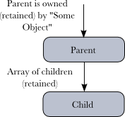
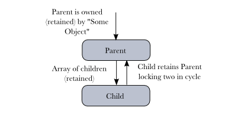
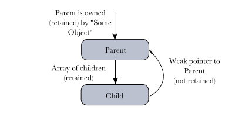
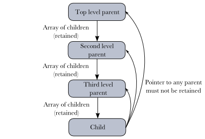
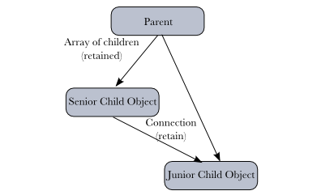
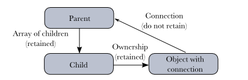

Please note: this article is part of the older "Objective-C era" on Cocoa with Love. I don't keep these articles up-to-date; please be wary of broken code or potentially out-of-date information. Read "A new era for Cocoa with Love" for more.
Rules to avoid retain cycles
Normally in Objective-C, if you follow the basic rule of maintaining a positive retain count for everything you need to hold onto and releasing when you're done, memory management will "just work" — until you create a retain cycle and suddenly no objects in the cycle will ever be freed. In this post, I'll explain retain cycles, common cases where they occur and the solutions to these problems.
Memory Management
All memory in a computer program must be allocated before it can be used and if you want to reuse that memory later for another purpose, it must be deallocated when you are done with it.
In garbage collected environments, programmers don't need to handle the allocation and deallocation themselves; the allocation, retaining, releasing and deallocation are handled automatically — but these steps still occur. Unfortunately, this automatic work is CPU and memory hungry; garbage collection is slower and takes more memory than manual memory management.
So, on the iPhone and in performance critical Mac OS X applications, we still have to handle memory management ourselves and that means methodically following the rules of Objective-C memory management:
- If you want to "own" an object, you must alloc, copy or retain it.
- Always release or autorelease when you are done with an object.
Unfortunately, if a retain cycle occurs, these rules are not enough to guarantee memory is freed correctly.
Object hierarchies and retain cycles
A quick explanation of retain cycles requires that I quickly summarize how hierarchies of objects are tied together. Specifically: objects in a hierarchy are created, owned and freed in a chain along the hierarchy.
In this example, "Some Object" owns Parent which in turn owns the Child.
When the hierarchy is no longer needed, "Some Object" sends a release to the Parent. The Parent's retainCount hits zero, causing its dealloc method to run. In its dealloc method, it sends a release to the Child, successfully freeing the chain. This is the correct behavior.
The problem of retain cycles occurs when the Child needs a pointer to the Parent for any reason and it chooses to retain the Parent. This alters the diagram to the following:
In this diagram, when "Some Object" sends a release to the Parent, the retainCount does not reach zero (since the Child's retain of the Parent has incremented the retainCount for itself). Since the Parent's retainCount does not reach zero, its dealloc method never gets called and so it never sends a release to the Child.
This is a retain cycle: with the Parent retaining the Child and the Child retaining the Parent, they continue to exist, cut off from the rest of the objects in the program but keeping themselves alive. They have leaked.
Avoiding retain cycles rule #1: An object must never retain its parent
The first rule to avoid retain cycles is that an object must never retain its parent. This changes the previous diagram to the following:
This is the easy case: an object should never retain its parent when it makes a pointer to the parent.
Notice that the term "weak pointer" is used. A weak pointer is one that does not retain its target.
Of course, now that the child doesn't retain the parent, the child must be aware of any situation where the parent becomes invalid (freed) and not use its pointer to the parent in that case.
So, either:
- The parent must set the
parentpointer in the child tonilwhen the relationship is broken. - The design must guarantee that the parent pointer is always valid for the child's lifetime (or if the parent uses
autoreleaseto free children, valid except in the child'sdeallocmethod).
or
These two options apply to weak pointers in general: once the target becomes invalid, the pointer must be set to nil or the design must otherwise prevent invalid use.
Generally speaking, the option of setting to nil is much safer. The only downside is that it requires a way of detecting the pending release of the target and nominating an object whose role it is to make that detection and update the pointer accordingly. It is easy here where the parent (the target of the weak pointer) knows about the child and is also the hierarchical manager of the child but not all retain cycles are one-to-one like this.
Avoiding retain cycles rule #2: no hierarchical ancestor can be retained
It may seem obvious but this is where retain cycles can be subtle: an object must not retain any of its parent's parents, or any of their parents.

This rule applies to many different situations. Some important considerations in Cocoa:
- If an object retains an
NSArray,NSDictionaryorNSSetthat collection must not retain the object or any of its parents. - If an object retains an
NSInvocationwhere one of the arguments is the object or one of its ancestors, theNSInvocationmay not retain its arguments.
If you want to store a collection of objects that may include one or more parents, you may want to consider one of the collections capable of non-retained pointers ("weak" collections):
- A
CFArray,CFDictionaryorCFSetwithNULLfor the callbacks structure. i.e.:CFArrayCreateMutable(NULL, 0, NULL);. +[NSPointerArray pointerArrayWithWeakObjects](Mac OS X only)+[NSMapTable mapTableWithWeakToWeakObjects](Mac OS X only)+[NSMapTable hashTableWithWeakObjects](Mac OS X only)
In the rare situation where you must put a parent into a collection which retains its contents (like NSArray) you can wrap the contents in a non-retained object NSValue. i.e.:
[arrayOfParents addObject:[NSValue valueWithNonretainedObject:aParent]];Despite this non-retain requirement for direct ancestors, it is okay to retain non-direct ancestors. However, once an object retains a non-direct ancestor, it becomes a direct ancestor to the object it retains.
For example, consider a situation where one child of a parent retains another:
Before the "senior" child retained the other, they were both level siblings. Once one child retains another, it becomes a direct ancestor to the other. This now "junior" child may not retain its senior sibling without creating a loop. Any connection from this "junior" child back to the "senior" child must follow the "weak pointer" rules.
If you have lots of sibling nodes that you'd like to connect in complex ways, it's best to leave the ownership to the parent and connect all the siblings using non-retained pointers.
Avoiding retain cycles rule #3: "Connection" objects should not retain their target
Any object which connects itself to an arbitrary target object, without knowing their relationship, must not retain its target.
Connection objects include:
- objects with a target and action (like a button)
- objects that take a delegate
- observees (objects to which observers are added)
Lets consider this by looking at the example of a button in a user-interface. A button connects the view hierarchy (through the button's superview) to the target of its action (it invokes the action method on its target when clicked).
A button must not retain its target. The reason for this becomes clear when you consider that a connection may need to point to a parent object:
This diagram models the common situation where button invokes a method on the controller. The "Parent" is the view controller, the "Child" is the view which contains the button and the "Object with connection" is the button.
Clearly, if the button retained its target, there would be a retain cycle.
Obviously though, this creates a management problem: the button's controller must ensure that its target is updated if the target disappears (since the button object won't notice on its own).
Responsibility for maintaining connections invariably lies with that object's manager — following the design of your code, you must decide which object is responsible for managing the connection and it must detect when the connection becomes invalid and set it to nil or delete the connection entirely.
Fortunately, in most situations the solution is straightforward: the target is ultimately the owner and controller of the connection object, so the target just needs to release its children correctly when it is released and the connection will never persist past the lifetime of the target.
Avoiding retain cycles rule #4: use "close" methods to break cycles
If you have a hierarchy that is difficult to work out, it may be easier to retain any object you wish, and implement a "close" method to address the problem of cycles. A "close" method is one that is guaranteed to be sent to an object when its primary function is complete.
An example of this is a retain cycle between two NSViews. If you want to create retain cycles between two views, then go ahead. All you need to remember to do is disconnect each view in its willRemoveSubview: method.
The willRemoveSubview: acts to warn each view about a pending removal from the display (an end to its primary function) and the method is sent regardless of retain count — so you can use it to break any possible retain cycles so that the object will be dealloc'd as normal when its parents release it.
Avoiding retain cycles rule #5: temporary retains must be temporary
Any of these rules can be broken for short periods of time — however the rule must by "unbroken" automatically, without further intervention, for example: when an animation or other triggered process completes.
This is particularly useful for actions expected to delete, disrupt, sort or rearrange hierarchies temporarily. You must remain mindful that this could inflate memory use if you hold on for too long, so only use this approach sparingly.
An example of a temporary broken rule is the NSURLConnection delegate. By default, a delegate should not be retained as it is the target of an arbitrary connection (see Rule #3). However, an NSURLConnection's use of its delegate is guaranteed to complete automatically (either by connection complete or by timeout) so this object can safely retain its delegate. To be a good citizen in this situation, the NSURLConnection also provides the cancel method which acts as a "close" and will release the delegate sooner if desired (although the release is deferred through the run loop; it is not synchronous to the method invocation).
Conclusion
You may be tempted to retain every object you use out of fear that it will disappear while you're using it. Unfortunately, you can't simply retain everything — you must be aware of the hierarchical structure and think about what you are retaining and why.
I've listed 5 rules here but if you want a simpler message to remember: an object may only retain something indefinitely if it is hierarchically senior. If you don't know which object is senior, you must work it out before you retain. If there is no clear senior object — you should redesign so that there is.
Temporary files and folders in Cocoa